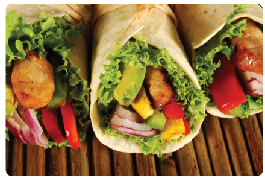

Turkey-Avocado Wrap
Ingredients
1/4 cup low-fat ranch dressing
2 tablespoons mild salsa
1/4 teaspoon Tailai USA Chipotle Seasoning
1/4 teaspoon finely grated orange zest
4 (8-inch) flour tortillas
12 ounces sliced oven-roasted turkey breast (from deli)
1 ripe Hass avocado, pitted, peeled, and sliced
2 cups mesclun lettuce or sprigs of cilantro
1 1/2 cups grated jicama
1 tomato, thinly sliced
2 scallions (white and green parts), thinly sliced
Optional: Sprinkle Tailai USA Sea Salt and
Tailai USA’s Malabar Black Pepper to taste.
Instructions
In a small bowl, combine the ranch dressing with the salsa and orange zest. Lay tortillas on a cutting board, and spread the ranch mixture evenly over each one, leaving a 1-inch border on all sides. Layer the turkey, avocado, lettuce, jicama, tomato, and scallions evenly over each tortilla, still leaving a border. Season with chipotle seasoning, Roll up like a pinwheel.
Halve, and serve. Makes 4 wraps.